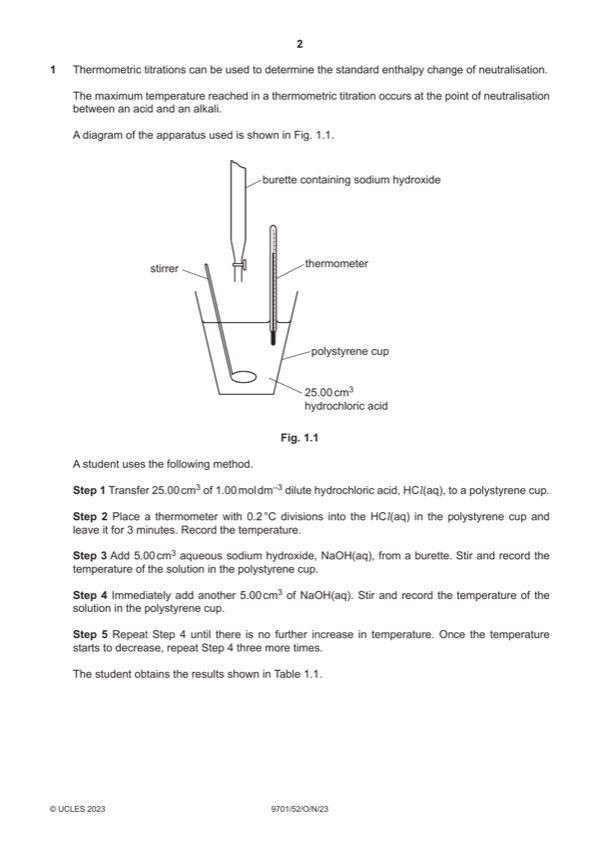

Question 1

Original paper page 2
Part 1(a)(i) — solution
9 points plotted correctly 2
Two straight lines of best fit which correctly intersect
Mark points
- Include the ideas shown in the solution above.
Part 1(a)(ii) — solution
- Temperature change = 1
Mark points
- Temperature change = 1
Part 1(a)(iii) — solution
intersection point volume (read from graph) 1
Mark points
- Include the ideas shown in the solution above.
Part 1(a)(iv) — solution
- n(HCl) = 1.00 (25.00/1000) = 0.0250 1
- [NaOH] = 0.0250 (1000/1(a)(iii)) 1
Mark points
- n(HCl) = 1.00 (25.00/1000) = 0.0250 1
- [NaOH] = 0.0250 (1000/1(a)(iii)) 1
Part 1(a)(v) — solution
Answer: OR
The indicator: 1
changes colour rapidly / instantly
OR
detects end-point / neutralisation rapidly / instantly
Mark points
- Correct result: OR
Part 1(b) — solution
(25 cm3) Volumetric pipette 1
Mark points
- Include the ideas shown in the solution above.
Part 1(c) — solution
- ((2 0.1)/2.5) 100 = 8(.00) (%) 1
Mark points
- ((2 0.1)/2.5) 100 = 8(.00) (%) 1
Part 1(d) — solution
- mcΔT = 1
- = 1181.268 (J)
- = q/n(NaOH) (÷1000) 1
- = 1181.268 / (1.00 22.10/1000) ÷ 1000
- = – 53.5 (kJ mol–1)
Mark points
- mcΔT = 1
- = 1181.268 (J)
- = q/n(NaOH) (÷1000) 1
- = 1181.268 / (1.00 22.10/1000) ÷ 1000
- = – 53.5 (kJ mol–1)
Part 1(e) — solution
Heat loss (to the surroundings) 1
Mark points
- Include the ideas shown in the solution above.
Part 1(f) — solution
Ethanoic acid is a weak acid 2
Energy is required for dissociation of ethanoic acid
2023 Page 5 of 7
9701/52 Cambridge International AS & A Level – Mark Scheme October/November 2023
Mark points
- Include the ideas shown in the solution above.